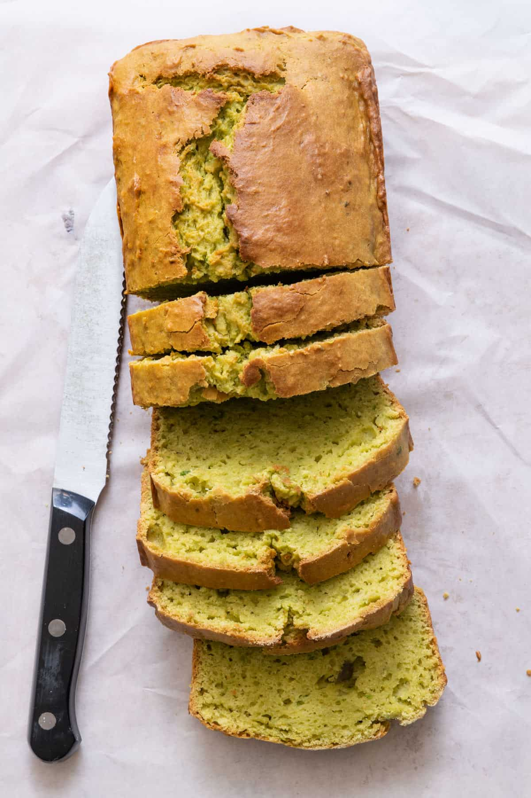

Avocado Bread
Prep Time: 20 minutes Cook Time: 45-50 minutes
Ingredients
- 2 ripe avocados
- 3/4 C sugar
- 3 eggs
- 2 C flour
- 1.5 TSP baking powder
Instructions
- Preheat the oven to 350F
- Begin by peeling the avocados and discarding the seeds. Mash up the flesh as much as possible prior to the next step.
- Cream the avocados with 3/4 C sugar, as well as 3 eggs. Set aside while preparing the dry ingredients.
- In a separate bowl, combine 2 C flour and 1.4 TSP baking powder.
- Fold the dry and wet ingredients together, making sure there are no dry spots.
- Pour mixture into a loaf pan, and bake for 45-50 minutes.